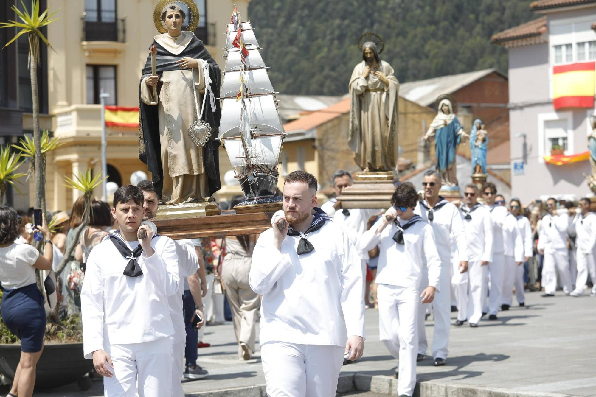
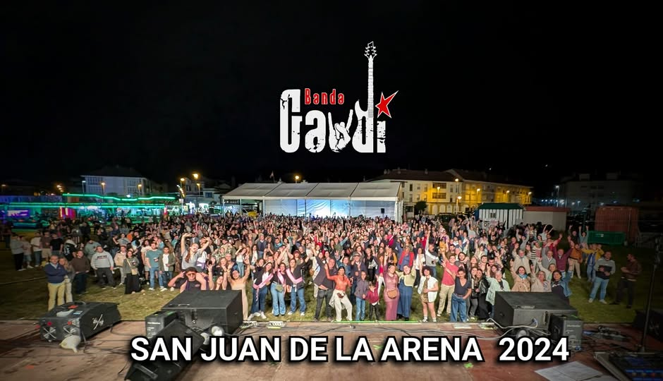
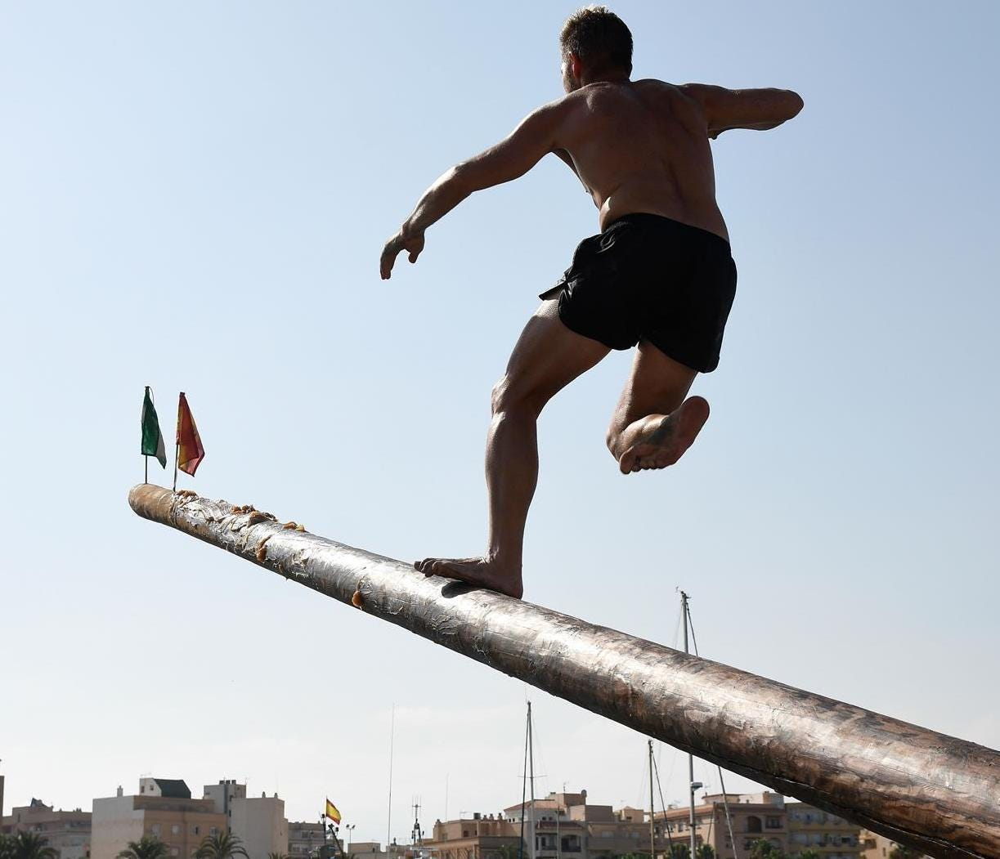
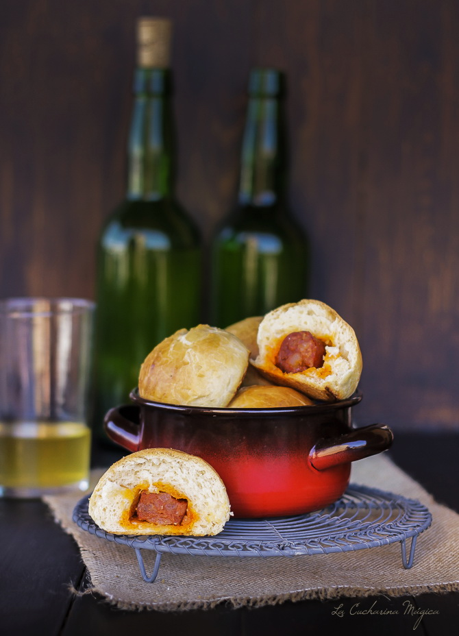
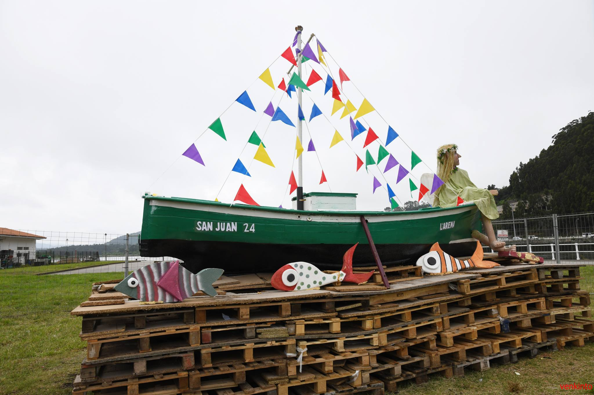
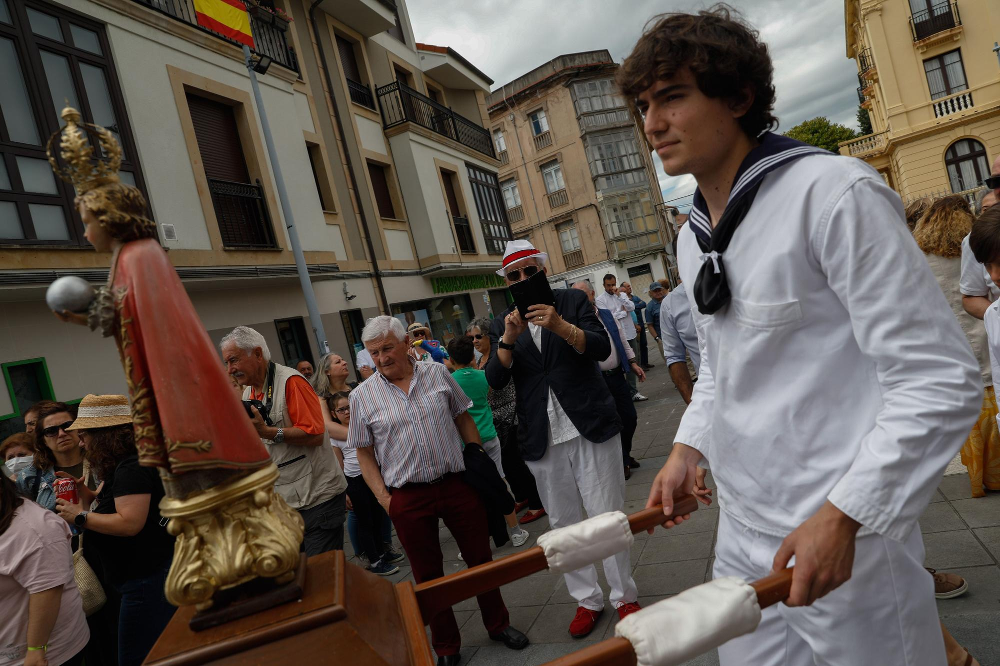
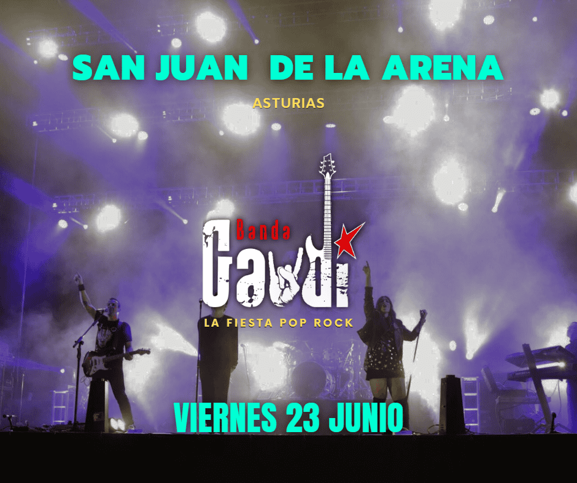
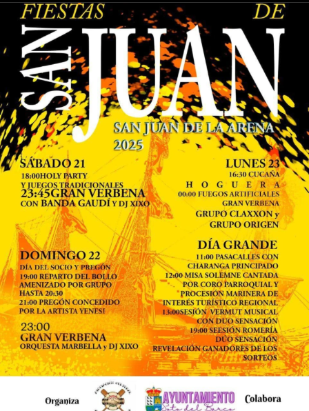
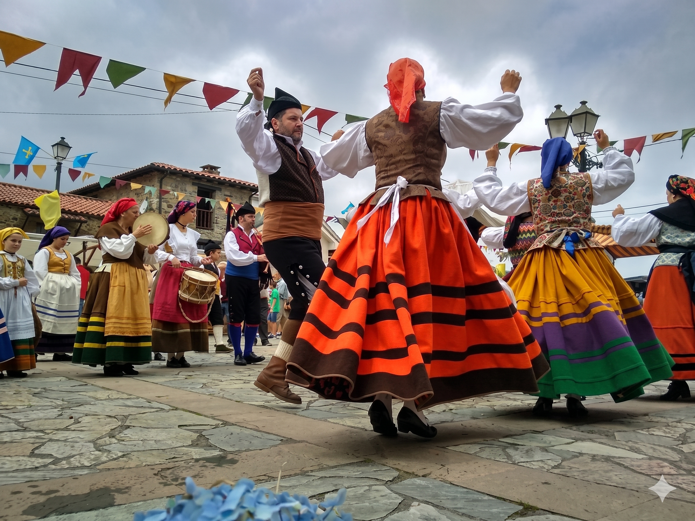
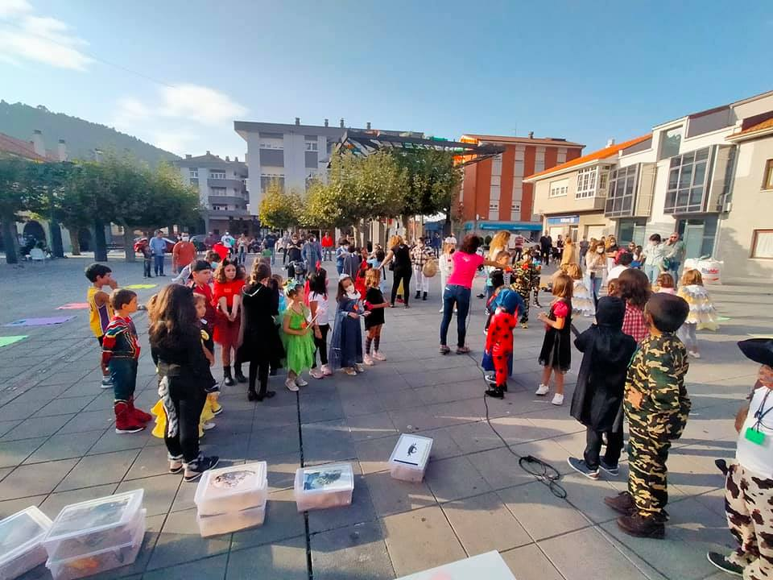

El acto más emblemático es la procesión marinera, declarada Fiesta de Interés Turístico Regional, en la que la imagen del santo recorre las calles del pueblo hasta llegar al puerto. Allí, es embarcada en una lancha engalanada que navega por la ría del Nalón, escoltada por otras embarcaciones.


Con el tiempo se añadieron elementos populares como las verbenas nocturnas, los fuegos artificiales y la tradicional cucaña, junto a la gastronomía típica de sardinas a la brasa, sidra y bollos preñaos. Hoy la fiesta es un punto de encuentro que combina tradición religiosa, cultura marinera y diversión popular.
CURIOSIDADES

Cucaña
Juego tradicional en el puerto: los participantes intentan alcanzar un premio en el extremo de un palo engrasado sobre el agua, entre risas y aplausos.

Gastronomía
En el día del socio la sidra y los bollos preñaos son protagonistas de la tarde, compartidos en el prao de la fiesta.
Fuegos Artificiales
El día grande de las fiestas a la media noche, se enciende la hoguera de San Juan, con fuegos artificiales iluminando el cielo nocturno y se reflejan en las aguas de la ría.

La Hoguera Mágica
La medianoche del 23 de junio se ilumina con la gran hoguera de San Juan. El fuego purificador quema lo viejo para dar paso a los buenos deseos del verano.

Procesión Marinera
La imagen del patrón recorre las calles del pueblo acompañada de una banda de gaitas y acaba en la ría del Nalón en una embarcación engalanada, reflejando la identidad marinera del pueblo.

Verbenas
Las noches se llenan de ritmo con las mejores orquestas del momento. Música en directo y baile hasta el amanecer para todas las edades.

Vivir la experiencia
Las Fiestas Patronales de San Juan de la Arena se viven con intensidad año tras año, convirtiendo el pueblo en un gran escenario festivo.

Folclore Asturiano
En la plaza del pueblo, se hacen bailes tradicionales asturianos, para seguir una tradición.

Día del Niño
Los más pequeños también tienen su espacio con juegos tradicionales, hinchables, espectáculos de magia y la esperada holly party.